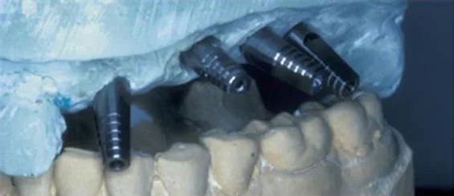
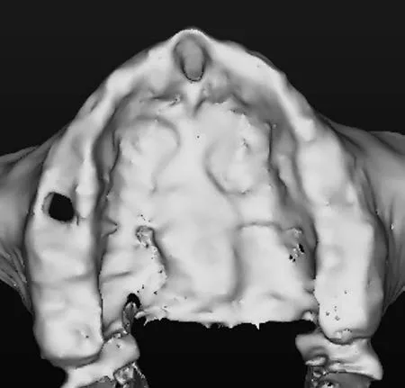

نسخه استخراجشده؛ ترجمه یا تأیید علمی انجام نشده است. وضعیت: captured
نبود رضایت آگاهانه یکی از شایعترین محورهای شکایت قصور در دندانپزشکی است — و نکته این است که امضای فرم بهتنهایی محافظ نیست.
صریح بگوییم: بسیاری از درمانگران فکر میکنند اگر بیمار فرم رضایت را امضا کرده باشد و عارضهای رخ دهد — مثلاً آسیب عصبی ناشی از ارزیابی نکردن حجم استخوان — مسئولیتی متوجهشان نیست. این تصور نادرست است: رضایت، جای استاندارد مراقبت را نمیگیرد.
و ادعاهای رایج بیماران در این پروندهها، الگوی روشنی دارند: «وقتی فرم را جلویم گذاشتند تحت آرامبخش بودم»، «منشی فرم را داد و گفت چیز مهمی نیست»، «فرصت پرسیدن سؤال نداشتم». وقتی فرم روز جراحی امضا میشود، بیمار اغلب میگوید «نخواندم» یا «تحت فشار امضا کردم».
پروتکل توصیهشده از همینجا میآید: فرم رضایت در جلسهی بررسی و طرح درمان امضا شود — یعنی پیش از تعیین وقت جراحی، نه در روز آن.
و یک مثال هشداردهنده: انجام سینوس لیفت و پیوند استخوان روی بیماری که تحت آرامبخش است و برای این اقدامات رضایت نداده — یعنی گسترش دامنهی جراحی فراتر از آنچه بیمار پذیرفته است.

مستندسازی در ایمپلنت، بخشی از درمان است. چند قاعدهی عملی:
هر گفتوگو با بیمار دربارهی یک عارضه باید روشن و مفصل باشد و رخدادهای منتهی به عارضه را شامل شود — و توسط خود دندانپزشک ثبت شود.
رفتارهای غیرهمکارانهی بیمار — مثل ادامهی سیگار با وجود توصیه، یا جلسههای ازدسترفته — باید کامل در پرونده ثبت شوند.
زبان فرم رضایت هم باید روشن و بیابهام باشد. فرمی که میگوید «مصرف زیاد سیگار» ممکن است به شکست ایمپلنت بینجامد، در عمل قابل دفاع نیست: «زیاد» یعنی ده نخ در روز یا بیست نخ؟ جملهی دقیقتر این است که هر مقدار سیگار میتواند ترمیم لثه و استخوان را مختل کند.
و تماسهای خارج از ساعت کاری: توصیه شده فرمی برای ثبت این تماسها نگه داشته شود، چون همین گفتوگوها در بررسی عارضه اهمیت پیدا میکنند.
تصمیم مرحلهبندی. کاشت همزمان با پیوند یا کاشت مرحلهای، تصمیمی است که از ثبات اولیه میآید: اگر استخوان میزبان بتواند ایمپلنت را در موقعیت درست تثبیت کند، همزمانی ممکن است؛ اگر نه، مرحلهای شدن انتخاب ایمنتر است.
و یک عدد که در تصمیم مرحلهبندی نقش دارد: وقتی پیوندی برای کاشت آینده انجام میشود، دورهی ترمیم دستکم ۴ تا ۶ ماه برای بلوغ گرافت لازم است پیش از آنکه ایمپلنت اندواستئال کاشته شود. در پیوندهای بزرگتر مانند کرست ایلیاک برای Division D، این دوره ۵ ماه یا بیشتر است — و پس از آن، دستهی استخوانی معمولاً به C-h یا A ارتقا مییابد.
